1차원 정상상태 열전도 1)
이 장에서는 열이 1차원 정상상태 조건 하에서 확산에 의하여 전달되는 상황을 다룬다. 1차원이라는 말은 종속변수들의 공간적인 변화를 나타내기 위하여 단지 하나의 좌표만이 필요하다는 뜻이다. 따라서 1차원 게에서 온도 구배는 단지 하나의 좌표 방향에 대해서만 존재하며 열전달은 그 방향으로만 일어난다.
각 위치에서의 온도가 시간에 관계가 없다면 그 계를 정상상태라고 한다. 본래의 단순함에도 불구하고 1차원 정상상태 모델이 많은 공학적인 계를 정확하게 나타내는 데 사용될 수 있다.
내부 열에너지 발생이 없는 열전달을 다룸으로써 1차원 정상상태 전도를 고려하는 것으로 시작한다. 이 절에서의 목표는 일반적인 형상(평판, 파이프 및 구)에서의 온도 분포와 열전달률에 대한 식을 결정하는 것이다. 이러한 형상에 대한 부가적인 목표는 열저항의 개념을 소개하고 전류 흐름에 대해 전기회로를 사용하는 것처럼 열흐름을 설계하는데 열회로를 사용하는 방법을 보여주는 것이다. 내부 열발생의 영향은 3..5절에서 다루는데 이절에서의 목표는 온도분포와 열전달률을 구하는 식을 얻는것이다. 3.6에서는 확장표면에 대한 1D 정상상태 열전도의 특별한 경우를 고려한다. 가장 일반적인 형태로서 이러한 표면을 FIN이라고 부르며 이것은 인접한 유체로 대류에 의해 열전달을 증가시키는 데 사용된다. 관련된 온도분포와 열전달률을 구하는 데 부가해서 핀 효능을 결정할 수 있는 성능변수도 나중에 소개 된다. 이후에는 인체 내의 열전달과 나노 스케일 전도와 관련된 개념 및 방정식이 제시된다.
3.1평면벽:
평면 벽에서의 1차원 전도에 대하여 온도는 x좌표만의 함수이며 열은 이 방향으로만 전달된다. 다음 그림을 보자.
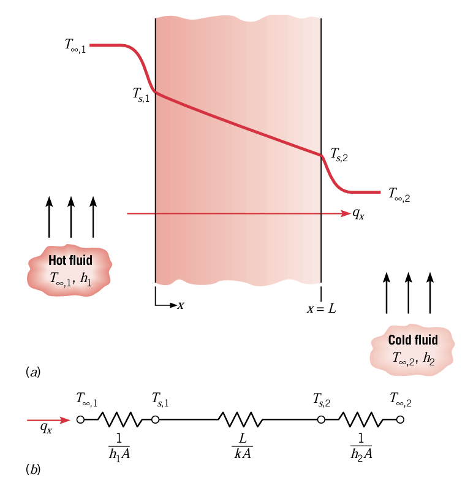
평면벽은 온도가 다른 두 유체를 분리시키고 있으며 열전달은 T001인 고온 유체에서 TS1인 벽의 한쪽 표면으로 대류, 이후 벽을 통한 전도후 TS2->T002인 벽으로 대류를 통해 일어난다. 먼저 벽 내부의 조건을 고려하여 전도 열전달률을 얻을 수 있는 온도 분포를 구하자.
3.1.1)온도분포
벽 내에서의 온도 분포는 적당한 경계조건으로 열방정식을 풀어 결정할 수 있다. 벽 내부에 분포된 에너지원이나 싱크가 없고 정상상태 1차원에서 열방정식의 적절한 형태는 다음과 같다.
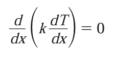
따라서 이 식으로부터 열발생이 없는 평면 벽에서 1차원 정상상태 전도에 대하여 열유속(q''x=-kdT/dx)은 일정하며 X와 무관하다. 즉 1차원 정상상태 전도에서 열발생이 없는 경우 q는 모든 부분에서 일정함. 벽 재료의 열전도율이 일정하다고 가정하면 위 방정식에서 k는 없앨 수 있고, 이로 인해 다음과 같은 일반해를 얻을 수 있다. T(X)=c1x+c2
적분상수 c1과 c2를 구하기 위해 경계조건을 도입해야 한다. x=0과 x=L에서 제 1종 조건을 적용하면, 이 경우 다음과 같다.
*경계조건이란?
1.표면온도 일정
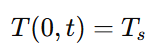
특정 표의 온도가 일정하게 유지되는 것이다.예를 들어, 표면이 큰 열용량의 물체(예: 끓는 물, 고정된 온도의 히터)와 접촉해 있어서 그 온도가 변하지 않을 때 이런 조건을 사용한다.
2. 열유속 존재
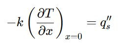
표면을 통해 일정한 열 유속이 들어오고 나가는 경우를 의미한다. 일정한 에너지가 계속 들어오거나, 전류가 들어오거나 하는 경우이다.
3. 단열표면
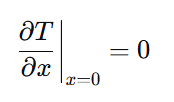
표면 열유속이 0이라는 조건, 내부 열이 표면으로 빠져나가지 않음. 표면 온도는 내부 열확산에 따라 자유롭게 변할 수 있음.
4.대류 경계조건
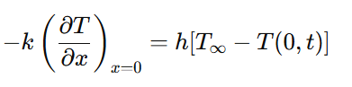
금속판 표면이 공기에 노출되어 열이 공기로 빠져나가거나 냉각수에 담긴 금속 표면이 냉각됨
T(X)=c1x+c2
T(0)=TS1, T(L)=TS2 따라서 이를 도입해보면
C2=TS1이고 C1L+TS1=TS2 , C1=TS2-TS1/L
이를 대입하면 온도 분포는 다음과 같다.
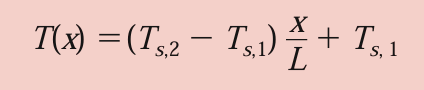
열발생이 없고 열전도율이 일정한 평면벽 내의 1차원 정상상태 전도에서 x=0일때 온도를 Ts1이라고 하면 T(X)는 위와 같이 표현할 수 있으며 이때 온도는 X에 따라 선형적으로 변한다. 즉 갈 수록 낮아지게 된다.
온도분포 T(X)를 얻었으니 이를 이용해서 qx도 구해보도록 하자. 푸리에의 법칙에 대입하면 다음과 같다.
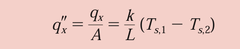 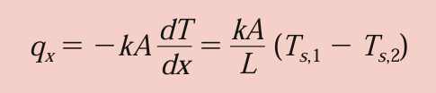
이때 식을 보면 알겠지만 heat flux 와 heat transfer rate는 전부 x에 무관하며 경계조건에 영향을 받는 상수이다.
앞 절에서 전도문제를 풀기 위하여 표준 풀이방법을 정립하였다. 즉 온도 분포에 대한 일반해는 먼저 열방정식을 풀어서 구한다. 그러고나서 경계조건을 적용하여 문제에 맞는 특수해를 구하고 이를 푸리에 법칙에 대입하여 heat transfer rate를 구하였다. 비록 실제로 아는 것이 표면 온도가 아니라 유체온도라도, 이 방법에서는 x=0과 x=L에서 표면온도를 경계조건으로서 규정하는 것에 유의하자. 만약 표면온도를 모른다고 해도 유체온도를 안다면 표면 에너지 평형을 사용하여 제 3경계조건을 써서 구할 수 있을 것이다.
예를 들어 두께 0.05M인 평판이 있고 왼쪽 면은 뜨거운 물과 접촉, 오른쪽 면은 25도의 물과 접촉했다고 보자. 온도분포 T(x) 와 왼쪽 면의 표면온도 Ts는?? K=200이다.
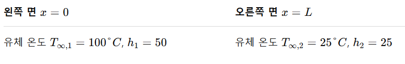
일단 정상상태 1차원 전도의 경우 열생성이 없다고 치면 다음과 같다.
당연히 두번 적분해서
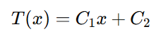
를 얻을 수 있음을 배웠다. 이제 경계조건 X=0일때 T(0)과 T(L)을 써야하는데, 벽 온도가 주어지지 않았다. 이때는 대류 경계조건을 쓸 것이다.
왼쪽 면부터 보면, 유체 ->고체로 열이 전달된다. 이때 전달되는 열의 부호를 맞춰주면 다음과 같다.
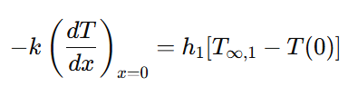
여기에 온도식을 대입해주면
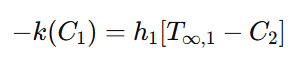 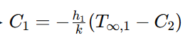
이제 오른쪽 면을 보자. 여기는 열이 나가는 방향이므로 왼쪽 항이 음수다. 따라서 -기호를 잘 붙여줘야 한다.
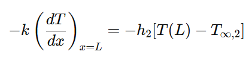 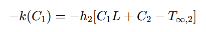
그럼 이렇게 되는데, 이제 여기에 위에서 정리한 c1을 대입해준다.
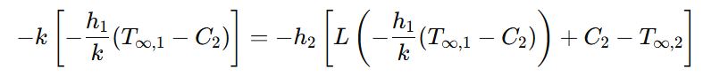 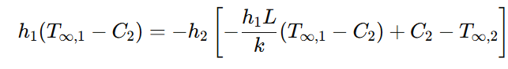 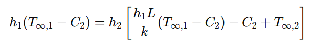 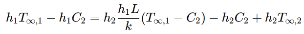 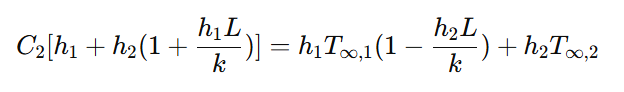 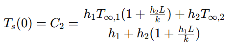
그리고 c1은
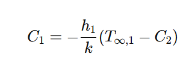
여기에 C2를 대입해준다.
이제 숫자항을 다 넣어주면 다음과 같다.
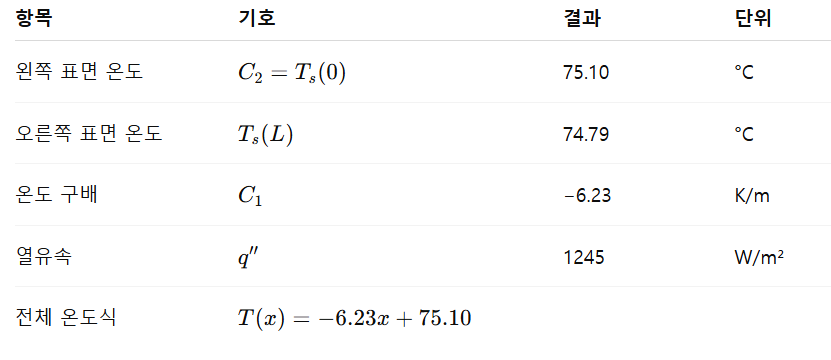
열유속이 일정함에 유의하라.
3.1.2 열저항
이 시점에서 내부의 에너지 발생이 없고 물성값이 일정한 1차원 열전달의 특별한 경우인 식 3.4는 중요한 개념을 제안하고 있다.
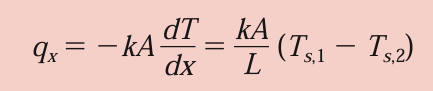
열확산의 구동력은 온도차이 이므로, 온도차 외 나머지 텀을 저항으로 두면 다음과 같이 표현할 수 있다.
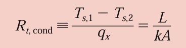
또한 열저항은 표면에서 대류에 의한 열전달도 존재한다.
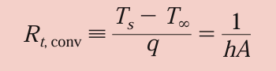
열전달 문제를 회로식으로 표현하는 것은 개념화에 유용한 도구이다.
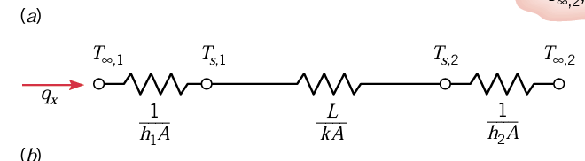
대류-전도-대류가 일어날 때, qx가 회로망을 통해 일정하기 때문에 다음과 같은 관계식이 나온다.
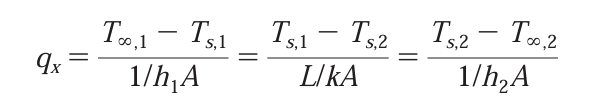
이때 거시적으로 초기 온도와 맨 마지막 조건만 살리면 다음과 같이 표현할 수 있다.
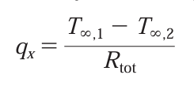 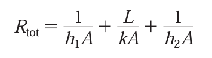
특히 표면과 그 주위 사이로 복사 열교환이 중요할 수 있다. 복사 열저항은 다음과 같이 정의된다.
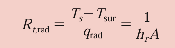
표면과 큰 주위 사이의 복사에 대한 hr은 식 1.9로부터 구한다. 표면 복사 열저항과 대류 열저항은 병렬로 작용하고, T00=Tsur이면 단일 유효 표면 저항을 얻을 수 있게 결합될 수 있다.
3.1.3:복합벽
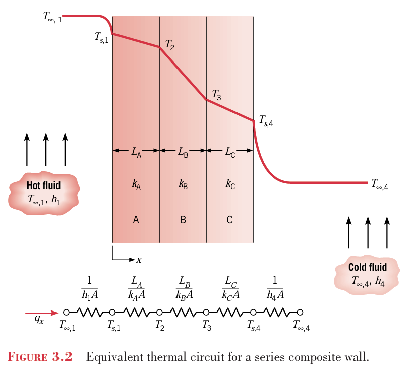
복합벽은 벽 여러개가 붙은 건데, 마찬가지로 열회로를 사용할 수 있다. 이 경우에 qx를 다음처럼 표현할 수 있다.
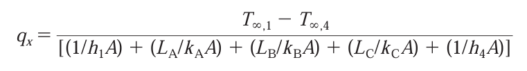 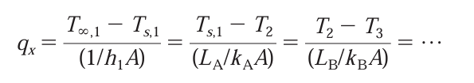
근데 복합계에서 이렇게 표현하는 것은 너무 길기 때문에, 다음과 같이 총괄 열전달계수를 사용한다.
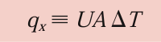 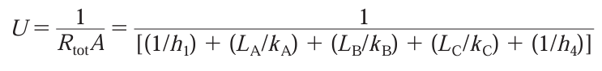 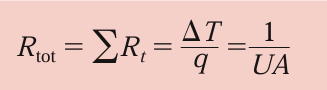
Rtot= 1/UA = △T/q
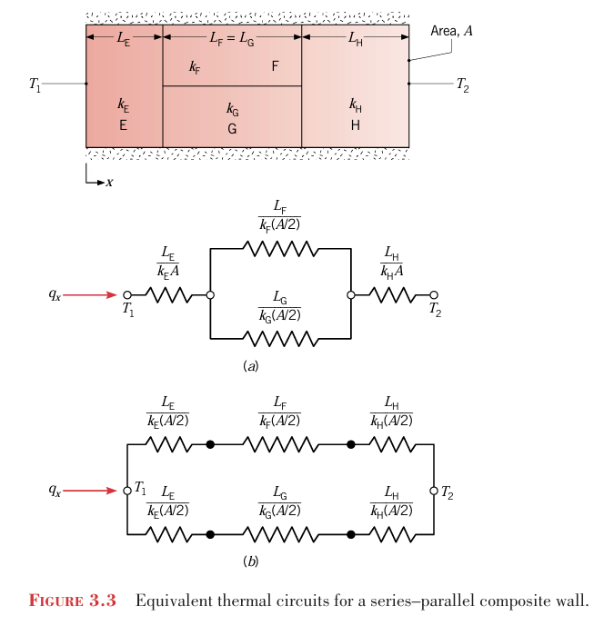
위 그림에서 나타낸 것 처럼 직렬-병렬의 배열로서 복합벽의 특성을 나타낼 수도 있다. 비록 열흐름이 다차원일지라도 종종 1차원의 조건으로 가정하는 것은 합리적이다. 이 가정을 근거로 하여 두 개의 서로 다른 열회로를 사용할 수 있다.
경우 a에서는 x방향에 수직인 표면이 등온이라고 가정하는 것이며 경우 b에서는 x방향에 평행한 표면이 단열이라고 가정하는 것이다. Rtot에 대하여 다른 결과가 얻어지고 q의 대응하는 값이 실제 열전달률과 다르게 나타난다. 이 차이들은 2차원 효과가 더 커짐에 따라 증가한다.
이걸 잠시 살펴보면
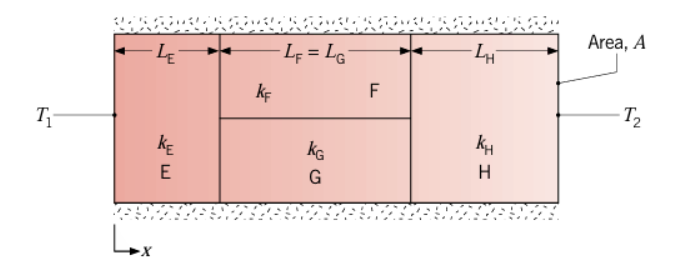
E – (F,G) – H 순서로는 직렬(series) 로 연결이고 F와 G는 병렬이다.
왼쪽 에서 오른쪽 T2로 열이 흐르는 회로로 보면,
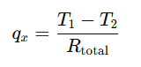
이고 각 구간의 저항을 구해보면 다음과 같다,
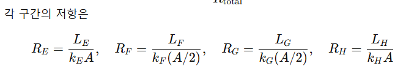
즉 절반의 면적은 RF에, 절반의 면적은 RG로 갔다. 따라서 전체 열저항은
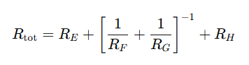
병렬 저항이 있는 구간 경우는 원래 다음과 같이 계산한다
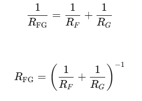 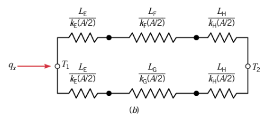 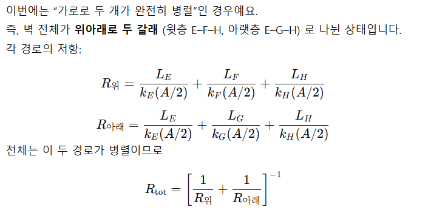
3.1.4접촉저항
비록 지금까지는 무시하였을 지라도 복합게에서는 재료 사이의 접촉면을 가로지르는 온도강하가 있을 수 있다는 것을 인정하는 것이 중요하다. 이 온도변화는 열접촉저항 Rt,c라고 하는 것에 기인한다. 이것을 그림 3.4에 나타내었으며 접촉면의 단위면적당 저항은 다음과 같이 정의된다.
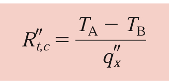
이는 주로 표면 거칠기 효과 때문에 존재한다. 대부분의 경우에 접촉점들은 공기로 채워진 틈과 함께 산재되어있다. 따라서 열전달은 실제 접촉면을 가로 질러 흐르는 전도와, 틈을 가로지르는 전도와 복사에 의해 일어난다. 접촉 저항은 점촉점과 틈에 대한 두 개의 병렬 저항으로 볼 수 있다. 접촉 면적은 전형적으로 작고, 특히 거친 표면에 대해서는 저항의 대부분이 틈에 의해 만들어진다.
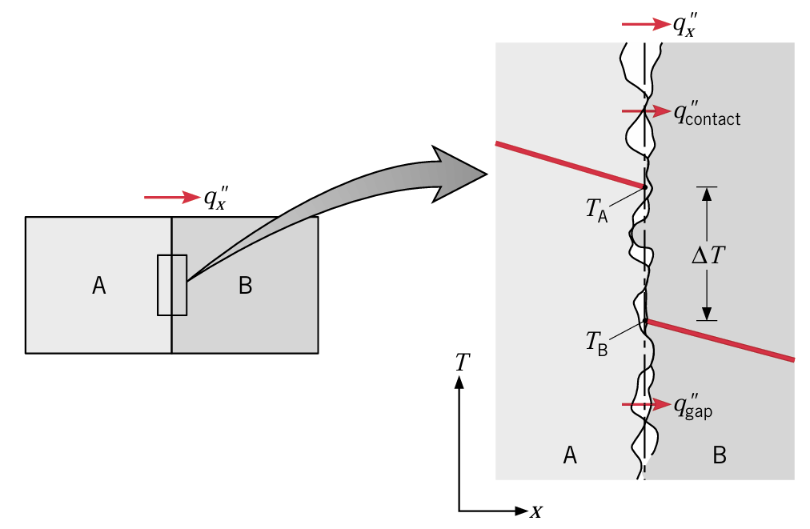
접촉 공간 유체의 열전도율보다 열전도율이 큰 고체에 대해서 접촉점의 면적을 증가시키면 접촉저항이 감소될 수 있다. 그러한 증가는 결합 압력을 증가시키거나 접촉표면의 거치칠기를 감소시킴으로써 가능하다. 또한 접촉저항은 열전도율이 큰 접촉공간 유체를 선택함으로써 감소시킬 수 있다.만약 유체가 없다면 틈 사이가 비어서 저항이 커진다.
비록 R''t,c를 예측할 수 있는 이론들도 있지만 실험적으로 얻은게 제일 믿음직하다. 접촉 압력을 높이면 접촉저항은 주는데, 이걸 다음 표에서 볼 수 있다.
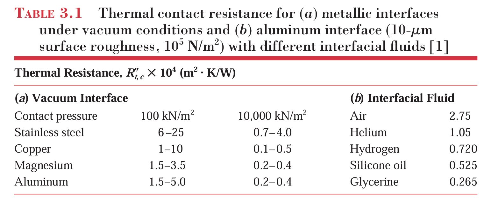 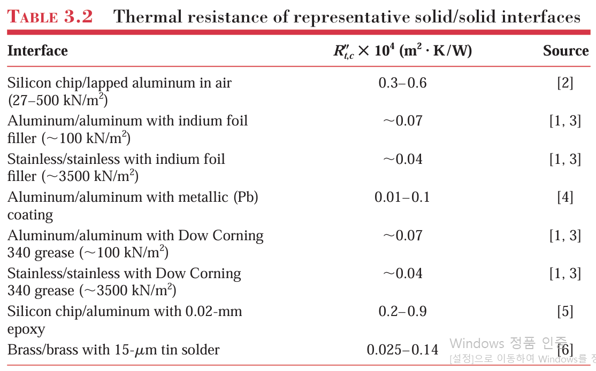
표3.1의 결과에 반하여 많은 실제적용에는 다른 고체사이에서의 접촉 및 또는 틈새물질이 포함된다. 따라서 표 3.2가 더 중요하다. 틈새물질로는 열전달을 잘해주는 연질 금속과 써멀그리스를 자주 쓴다. 이는 열전도율이 공기보다 50배정도 더 크다.
접촉저항은 실제로 계산한 저항보다 실제 저항이 크게 만드는 원인이 된다.
3.1.5 다공성 물질
많은 응용 분야 중에서 열전달은 고정된 고체와 유체로 구성된 다공성 물질에서 일어난다. 유체가 기체나 액체 중 하나일 때, 결과적으로 생긴 다공성 물질은 포화되었다고 한다. 그에 반해서, 불포화 상태의 다공성 물질에는 기체, 액체, 고체가 공존한다. 다공성 물질의 예는 2.2.1절의 나노 유체와 단열 시스템 뿐만 아니라 작은 개개의 알갱이 사이의 공간을 채우고 있는 유체를 가지고 있는 입자츼 층을 포함한다. 고체(solid) 와 유체(fluid) 가 섞여 있는 다공성 재료의 전체적인 열전달 능력을 어떻게 계산할 수 있는가?
x=0에서 T1, x=L에서 T2의 표면 온도를 가지고 있는 포화상태의 다공성 물질을 생각해보자. 정상상태에 도달한 후에, 만약 온도가 T1>T2라면 k값은 유효 열전도율로서 다음처럼 표시된다.
열전달이 일어날 때, 다공성 재료 전체를 균질한 단일 물질처럼 표현하려면
고체의 열전도율 ks 과 유체의 kf 을 결합해 유효열전도율 keff를 정의해야 한다.
현실의 다공성 물질은 위 두 모델 사이 어딘가에 존재한다. 실제 구조는 고체가 연결되고, 그 사이에 유체가 채워져 있다.
이거말고도 경험식이 있다.
보통 이걸 쓴다.
3.2 전도 해석의 대체 풀이 방법
3.1절의 전도 해석은 표준 풀이 방법을 사용하여 수행하였다. 즉 온도분포식 3.3
을 얻기 위하여 열방정식을 풀었고, 열전달률 식 3.4를 얻기 위해 푸리에 식을 적용하였다.
그러나 현재 조건들에 대해 대체 풀이 방법도 있다.
그림 3,5의 계에서 전도를 고려해보면
열발생이 없고 측면으로 열손실이 없는 정상상태 조건하에서는 열전달률 qx는 x가 증가해도 일정해야 한다는 것을 알 수 있다. 이는 비록 면적A(X)가 위치에 따라 변하고 열전도율 K도 온도에 따라 변하더라도 이 조건을 적용하여야 한다. 더욱이 온도 분포가 X,Y에 따라 변하는 2차원일지라도 Y방향의 변화를 무시하고 X의 1차원 분포로 가정하는 것이 합리적이다.
위의 조건들에 대하여 전도해석을 할 때 열방정식을 쓰지 않고 푸리에 식만 쓰는 것이 가능하다. 특히 qx가 일정하기 때문에, 그 값이나 온도 분포를 모를지라도 전달률 방정식을 적분할 수 있다. 그림 3.5의 계에 적용할 수 있는 푸리에의 법칙을 고려해보자.
qx의 값이나 T(X)를 모를지라도 q가 일정한 것만 알고있다. 따라서 푸리에 법칙을 다음처럼 나타낼 수 있다.
단면적은 x의 함수이고 재질의 열전도율은 온도의 함수이다. 이 결과식은 T(x)의 형태로 주어진다. 특히 임의의 점 x1에서 온도가 T1임을 알면 이는 바로 qx를 알아낼 수 있는 단서로도 사용된다. 만일 면적이 일정하고 k가 온도에 무관하면 다음처럼 간단해지긴 한다.
확산 문제들을 풀 때 적분 형태의 확산율 방정식을 이용하여 푸는 것을 자주 택한다. 그러나 이렇게 할 때는 열발생이 없는 정상상태 1차원 열전달이라는 제한조건이 있음을 반드시 명심한다.
3.3 반지름 방향 계
원통형 계와 구형 계에서는 종종 반지름 방향으로만의 온도 구배를 경험한다. 이들은 1차원으로 취급될 수 있다. 더욱이 열 발생이 없는 정상상태 조건 하에서ㅇ 이러한 계들은 열방정식의 적절한 형태로 시작하는 표준 풀이방법 또는 푸리에의 법칙의 적절한 형태로 시작하는 대체 풀이방법으로 해석할 수 있다. 이 절에서는 표준 풀이 방법으로 원통형 계를 해석해보고, 대체 풀이 방법으로 구형계를 해석할 것이다.
3.3.1:원통
일반적인 예로서 내부 표면과 외부표면이 온도가 서로 다른 유체에 노출되어있는 속이 빈 원통이 있다.
열 발생이 없는 정상상태 조건에 대하여 열방정식의 형태는 다음과 같다.
여기서 우선 k를 변수로서 취급한다. 이 결과의 물리적인 중요성은 푸리에의 법칙의 적절한 형태를 고려하면 명백해진다. 고체 내에서 임의의 원통 표면을 가로질러 전도되는 에너지율은 다음과 같이 나타낼 수 있다.
여기서 A=2ㅠrL은 열전달 방향에 수직인 면적이다. 열방정식에서 krdT/dr이 r에 무관하므로, 전도 열전달률ㄹ은 반지름 방향으로 일정하다는 것을 알 수 있다.
식 3.28을 풀고 적절한 경계조건을 적용함으로써 원통에서의 온도분포를 구할 수 있다. k 값이 일정하다고 가정하면, 열방정식을 두번 적분하여 다음 식을 얻을 수 있다.
적분상수 C1과 C2를 구하기 위하여 다음 경계조건을 도입한다.
이를 대입하면
그럼 온도분포는 위와같은데, 원통벽을 통과하는 반지름 방향 전도와 연관된 온도 분포는 같은 조건 하에서 평면벽에 대한 것처럼 선형적이 아니라 대수적인 것에 주목하자. 이제 푸리에 식
에 대입하면 다음과 같다.
여기서 R도 쉽게 구할 수 있다.
이 저항은 그림 3.7의 직렬 회로도에 나타나있다.
qr의 값이 r에 무관하므로 대체 풀이방법을 사용함으로써, 즉 식 3.29를 적분함으로써 앞의 결과를 얻을 수도 있다.
이번에는 그림 3.8의 복합계를 고려하자.
복합 평면벽을 어떻게 다루었는지를 다시 생각해보고 접촉면의 접촉저항을 무시하면, 열전달률은 다음과 같이 나타낼 수 있다.
앞의 결과를 총합열전달계수U ( R=1/UA)로 나타내면
이때 A가 문제가 되는데, 면적이 여러개이기 때문이다. 안쪽 면적을 A1으로 치면 다음과 같이 U1이 정의된다.
면적은 뭐로잡든 상관없이 UA=1/R로 동일하다.
3.3.2 구:
그림 3.9의 속이 빈 구에서 열전도 해석에 대체 풀이 방법을 적용해볼 것이다.
에너지 보존 법칙에 의하면 그림의 미소 검사 체적에 대하여 열발생이 없는 정상상태 1차원 조건에서 qr=qr+dr이어야 한다. 푸리에의 법칙의 적절한 형태는 다음과 같다.
이때 A=4ㅠr^2은 열전달 방향에 수직인 면적이다. qr이 일정하고 r에 무관하다는 것을 알고 있으며 식은 적분하면 다음과 같은 형태로 나타낼 수 있다.
k를 일정하다고 가정하면 다음 식을 얻는다.
열저항이 온도차를 열전달률로 나눈 것임을 기억하면 다음의 식을 얻는다
적절한 형태의 열방정식으로 시작하는 표준 풀이 방법을 이용하여 온도분포와 식 3.40, 3.41을 구할 수 있다는 것에 주목하자.
복합구를 복합벽과 복합 원통을 다룬 방법과 같은 방법으로 취급하여 복합구에 대한 적절한 형태의 총 열저항과 총합 열전달 계수를 구할 수 있다.
1차원 전도 결과의 요약
열에너지 발생이 없는 평면벽., 원통형 벽, 또는 구형 벽에서의 1차원 정상상태 전도에 대한 여러 중요문제를 다루었다. 이들 세 가지 형상에 대한 중요 결과를 표 3.3에 요약하였다. 여기서 △T는 안쪽 표면과 바깥쪽 표면 사이 온도차 Ts1-Ts2를 나타낸다. 각 경우에서 열방정식으로 시작하여 온도분포, 열유속, 열전달률 및 열저항에 대한 대응하는 식을 유도할 수 있다.